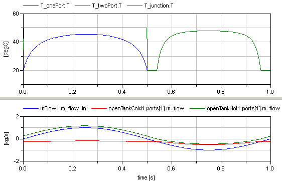

MeasuringTemperatureDifferences between using one port with and without explicit junction model and two port sensors for fluid temperature measuring |
|
Diagram
Information
This information is part of the Modelica Standard Library maintained by the Modelica Association.
This model demonstrates the differences that occur when using one- and two-port temperature sensors with and without explicit junction models. As shown in the next figure, the same system is shown in 3 different variations. In all cases exactly the same fluid system is defined. The only difference is how the temperature is measured:

{kind=link}
A pre-defined mass flow rate is present so that fluid flows from the reservoir to the tanks and after 0.5 s the mass flows from the tanks to the reservoir. The reservoir has a temperature of 500C whereas the tanks have an initial temperature of 200C and of 800C. The initial height of the tanks is made in such a form that fluid always flows out of the cold tank. When the fluid flows from the reservoir to the tanks, then it mixes with the cold tank and enters the hot tank. When the fluid flow from the tanks to the reservoir, then the cold and hot water from the two tanks first mixes and the flows to the reservoir.
A one-port sensor measures the mixing temperature at a connection point. Therefore T_onePort.T (the blue curve in the figure below) is the temperature of the mixing point. A two-port sensor measures the temperature at the upstream side. Therefore T_twoPort.T (the red curve in the figure below which is identical to the green curve) shows first the temperature of the reservoir and then the mixing temperature when fluid flows from the tanks to the reservoir. The same is measured with T_junction.T (the green curve below), because the one-port sensor is connected between the mass flow source and the junction and since the mixing takes place in the junction, the same situation is present as for T_twoPort.T.

Components (15)
| T_onePort |
Type: Temperature |
|
|---|---|---|
| T_twoPort |
Type: TemperatureTwoPort |
|
| system |
Type: System |
|
| openTankCold2 |
Type: OpenTank |
|
| openTankCold1 |
Type: OpenTank |
|
| openTankHot1 |
Type: OpenTank |
|
| openTankHot2 |
Type: OpenTank |
|
| mFlow1 |
Type: MassFlowSource_T |
|
| mFlow2 |
Type: MassFlowSource_T |
|
| sine |
Type: Sine |
|
| T_junction |
Type: Temperature |
|
| openTankCold3 |
Type: OpenTank |
|
| openTankHot3 |
Type: OpenTank |
|
| mFlow3 |
Type: MassFlowSource_T |
|
| junctionIdeal |
Type: TeeJunctionIdeal |